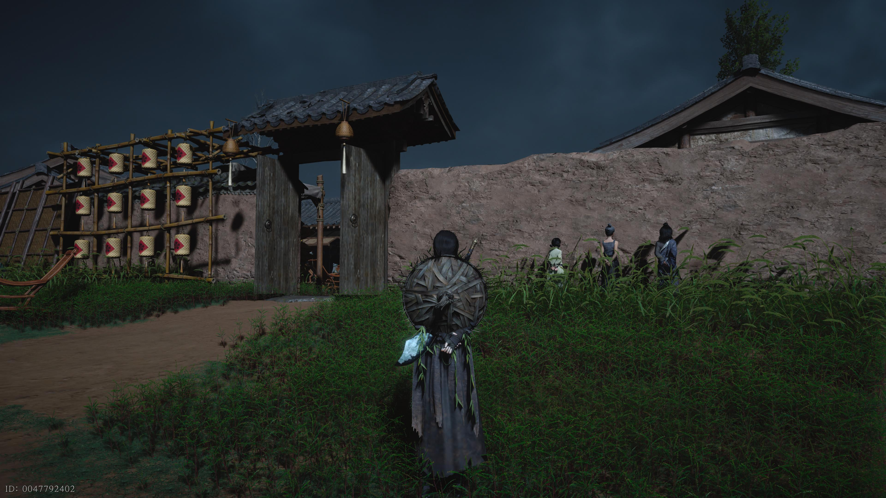
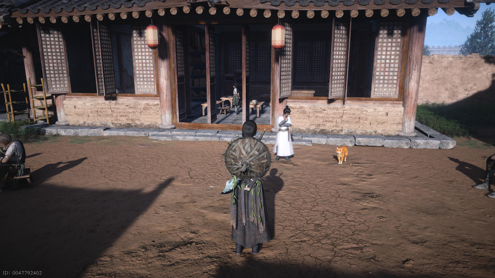
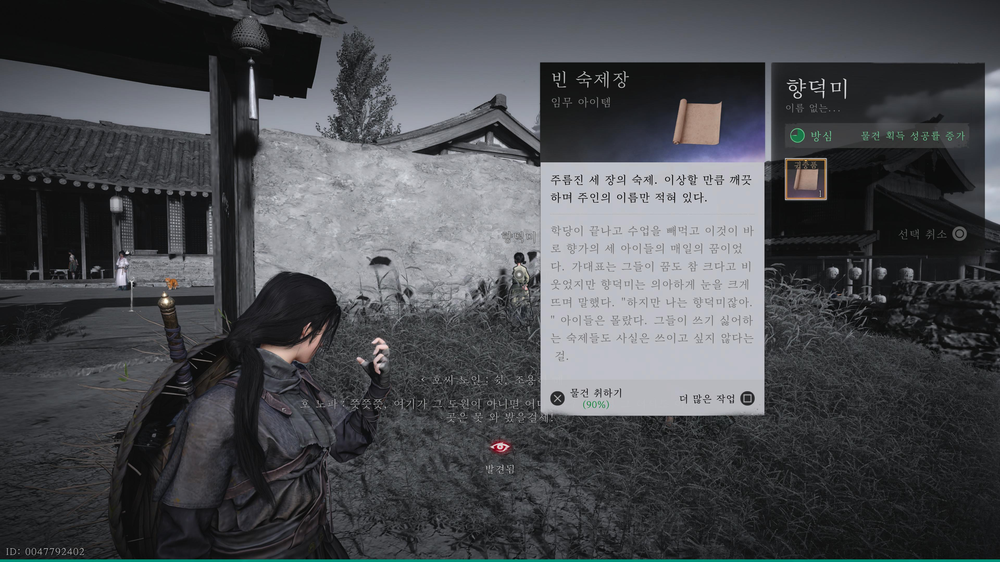

만사록
터무니 없는 날조
자유원의 아리가 세 아이를 혼내고 있다
📜 퀘스트 개요
숙제를 하지 않고 거짓말을 하는 아이들을 참교육(?)하는 의뢰입니다.
가대표의 부탁을 받아 숨겨진 숙제를 찾아내야 합니다.
혼나는 아이들
아래 위치로 이동하면 아리가 세 명의 아이를 혼내고 있습니다.
아이들과 대화해보면 터무니없는 변명만 늘어놓습니다.


가대표의 의뢰
아이들 바로 옆에 있는 문으로 들어가세요.
안에 있는 가대표는 아이들이 숙제를 내지 않았다며, 숨긴 곳을 찾아달라고 부탁합니다.

숙제 압수 (허공섭물)
다시 밖으로 나와 벌서고 있는 아이를 타겟팅하세요.
허공섭물 스킬을 사용하여 아이가 숨기고 있는 숙제를 뺏어야 합니다.

찾아낸 숙제를 가대표에게 돌려주면
아이들의 거짓말이 들통나며
퀘스트는 완료됩니다.